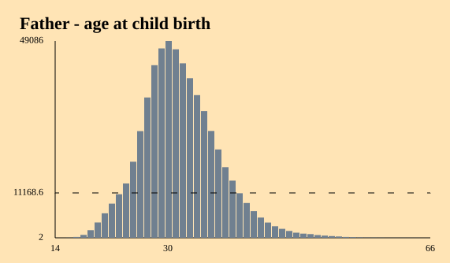
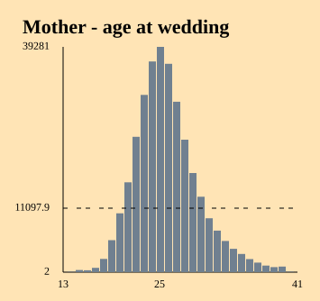
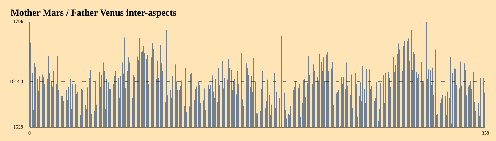

Date differences
Here are examples of distributions built computing the differences between two dates.


These distributions are called "age" in the context of this program.
Inter-aspects
"Inter-aspect" is the name used in this program to designate an aspect (an angle) between planets generated by two dates.For example:
- The longitude of venus at the moment of father birth is 100°
- The longitude of mars at the moment of mother birth is 150°
- The we say that the inter-aspect between mother's venus and father's mars is 50°

Hierarchy "distrib2"
As explained in the page about distributions,- A distribution representing a single quantity (here distribution by year, by day, and planetary positions) can be represented by an 1-dimensional array (abbreviated dim1).
- A distribution involving two quantities (here planetary aspects) can be represented either by a 1-dimensional array or by a 2-dimensional array (abbreviated dim2).
distrib2
├── age-dim1
├── age-dim2
└── interaspects
├── dim1
│ ├── SO-SO
│ ├── ...
│ └── NN-NN
└── dim2
├── SO-SO
├── ...
└── NN-NN
This hierarchy is called distrib2.
Relations between more than two dates
The program is not (yet?) able to generate distributions expressing the relations between three or more dates.If the data set contains more than two dates, the program only generates distributions for dates taken 2 by 2.
For example, for a dataset containing mother, father and child birth dates + wedding dates, the main directories will be:
distributions
├── child
├── child-wedding
├── father
├── father-child
├── father-wedding
├── mother
├── mother-child
├── mother-father
├── mother-wedding
└── wedding
Distributions of type distrib1 (single date) are in green.
Distributions of type distrib2 (two dates) are in yellow.
Many other distributions can be imagined, involving relations between three or more dates. The program is currently limited to these distributions.
Next: Distributions